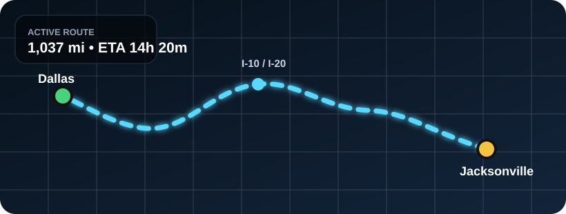
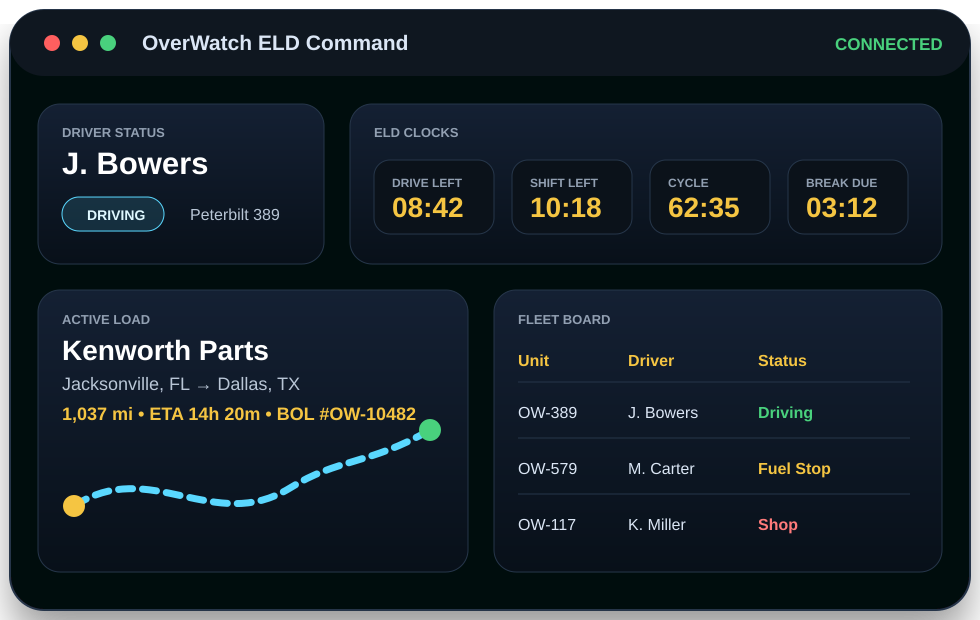

Drivers
- Start and end trips
- Track ELD-style clocks
- Complete DVIRs
- Upload or generate BOL records
OverWatch ELD turns American Truck Simulator sessions into clean fleet data: duty status, drive time, active loads, dispatch, BOLs, inspections, maintenance, live map positions, and company records for your VTC.
Peterbilt 389 • Trailer 53 ft Dry Van
Jacksonville, FL → Dallas, TX • 1,037 mi

No fake corporate fluff. These are the actual types of records a working ATS ELD-style system should surface for drivers and company staff.
Tracks the driver’s current work state and log history for each session.
Reads simulator telemetry so fleet data is based on the truck, not manual guesses.
Keeps each run tied to a dispatch, BOL, driver, truck, trailer, and route.
Lets drivers report issues and gives managers a repair trail by vehicle.
The homepage now presents OverWatch ELD as an ATS operations platform, not a generic trucking landing page. It highlights what users actually care about: logs, loads, live positions, truck condition, documents, and company workflow.

Connects to ATS telemetry and records driver activity, location, trip data, truck status, and active load information.
Shows familiar ELD-style clocks such as drive time, shift time, cycle time, break timing, and duty status changes.
Staff can create loads, assign drivers, track progress, and keep completed jobs in company history.
Creates Bill of Lading-style records with carrier, driver, truck, trailer, cargo, route, pickup, and delivery data.
Drivers can report defects while managers track repairs, maintenance notes, service state, and vehicle readiness.
Shows fleet movement, driver status, truck location, current trip, and active routes for staff and community operations.
| Unit | Driver | Status | Load |
|---|---|---|---|
| OW-389 | J. Bowers | Driving | Jacksonville → Dallas |
| OW-579 | M. Carter | Fuel Stop | Denver → Phoenix |
| OW-204 | A. Reyes | On Duty | Spokane → Reno |
| OW-117 | K. Miller | Shop | Maintenance hold |
The design keeps the OverWatch dark command-center look, adds an ATS badge, and uses believable ELD fields instead of vague marketing claims.
Download the client, connect ATS, and run your VTC with logs, dispatch, live map, maintenance, documents, and driver records.